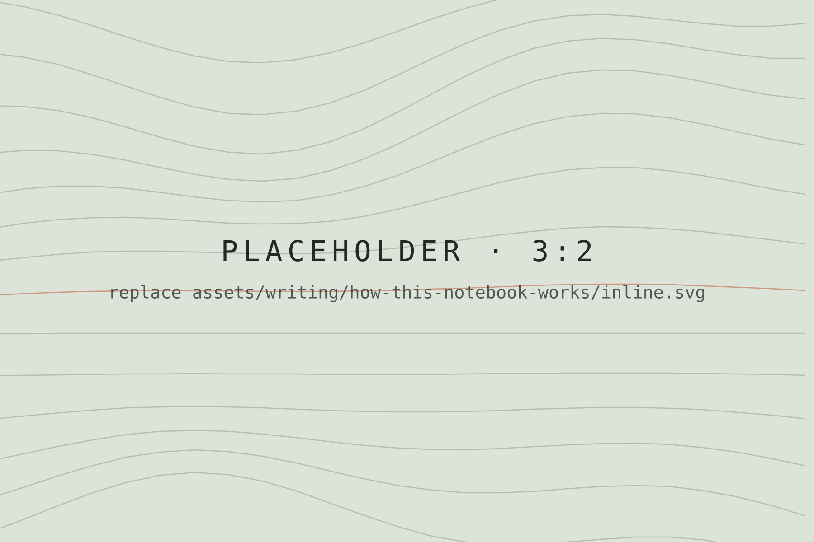
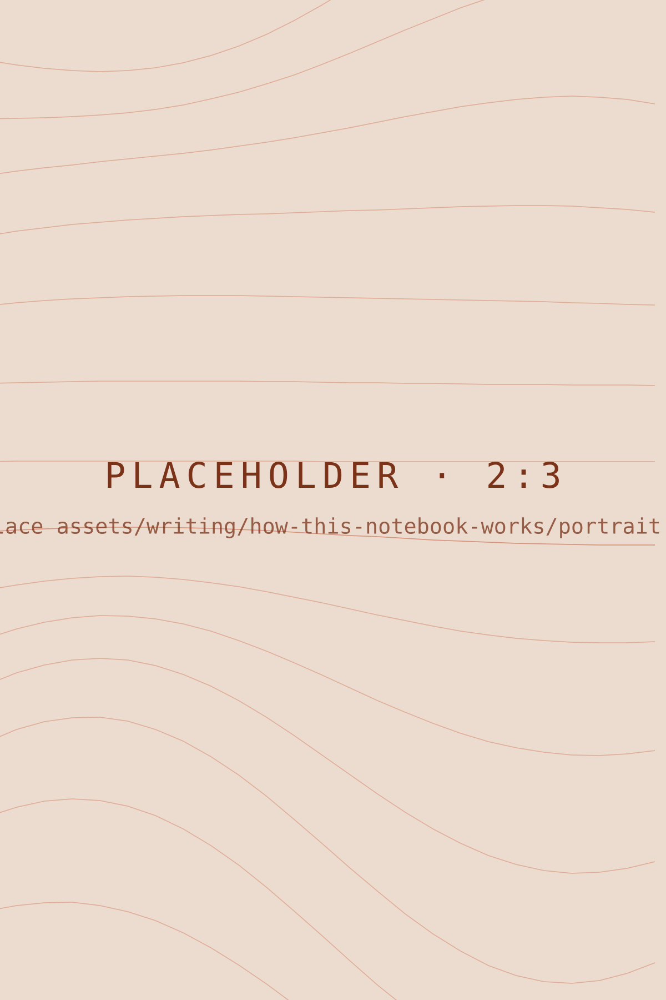
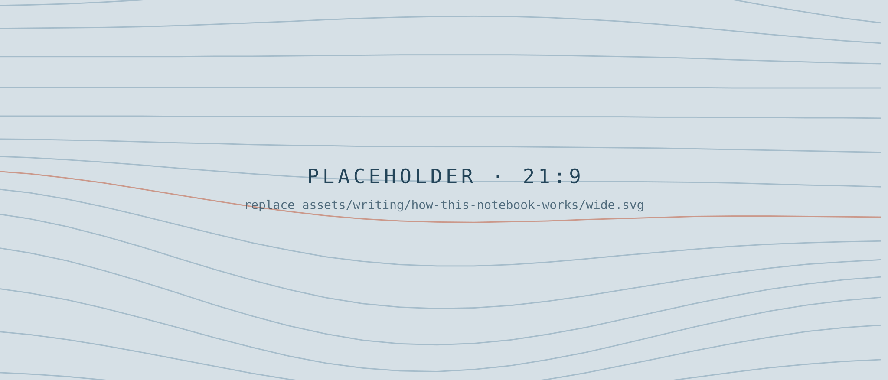
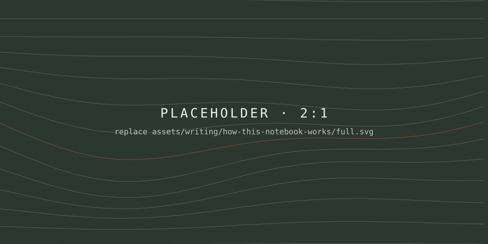

How This Notebook Works
A demonstration of every layout this publication supports — photographs, galleries, pull quotes, and more.

Every essay is a single Markdown file with a short header of details — title, date, category, cover photo — followed by the writing itself. The first paragraph of the body, like this one, is set a little larger as a lede.
Plain paragraphs need nothing special. Words can be emphasized, made strong, or turned into links. Straight “quotes” become curly ones, two hyphens (--) become an en dash, and three (---) an em dash — like this.
Photographs in the text
A single image on its own line sits within the text column. The text in quotes becomes the caption; anything after a | becomes the photo credit.

Portrait photographs are detected automatically and shown a little narrower, so they don’t fill an entire phone screen.

Wide and full-width photographs
Wrap an image in ::: wide to let it extend past the text on larger screens.

Or use ::: full for an immersive, edge-to-edge photograph.

Side by side
::: pair places two (or three) images in a row. Their heights line up automatically, whatever their shapes, and nothing gets cropped.
Galleries
::: gallery takes any number of photographs, arranges them in balanced rows, and opens them in a full-screen viewer when clicked. Use the arrow keys to move through them and Escape to close.
Quotes
A line starting with > is a regular quotation, set inside the text:
A block quote is for quoting someone else at length, or for setting a passage apart from the surrounding text.
A pull quote lifts one line out of the essay and gives it room. An optional last line starting with a dash becomes the attribution.
Lists, dividers, and code
- Bulleted lists use a dash at the start of each line
- Numbered lists use
1.,2., and so on - Keep items short
- First
- Second
- Third
Three hyphens on their own line make a section break:
Code can be shown inline, like npm run build, or as a block:
const reading = words / 230; // minutesVideo
::: video embeds a YouTube or Vimeo link (using their privacy-friendly players), or plays a video file from the article’s folder. Lines after the link become the caption.
::: video
https://www.youtube.com/watch?v=VIDEO_ID
Caption for the video.
:::That’s everything. The full guide, including how to add photographs and publish, lives in content/writing/README.md.